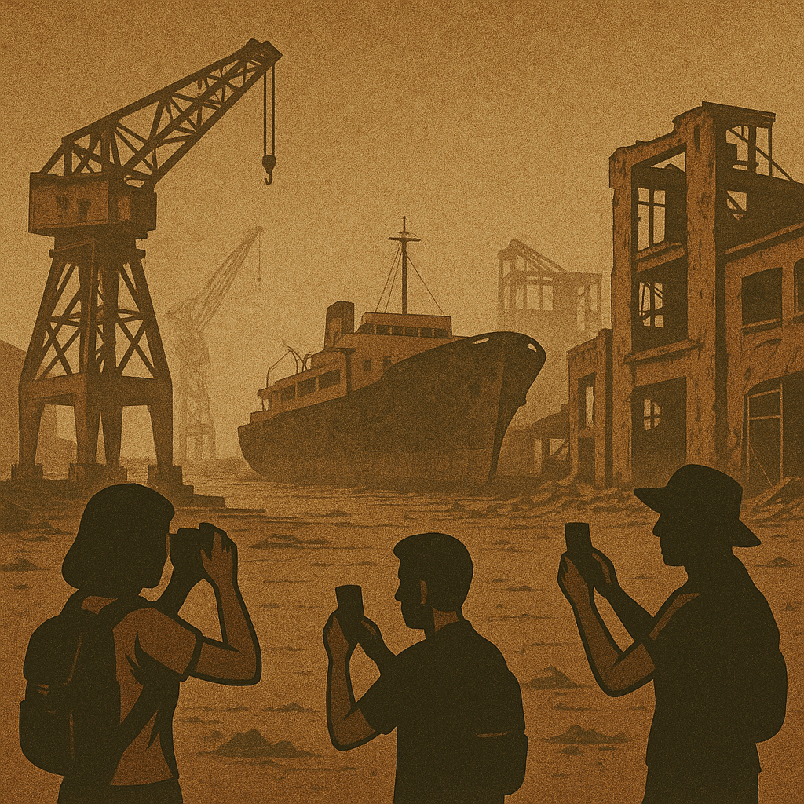

Há livros que confortam. Este não é um deles.
A República dos Esquemas é um espelho estilhaçado onde o leitor se vê — não como herói, mas como testemunha. É uma crónica literária dos últimos cinquenta anos da vida política portuguesa, contada com ironia, lucidez e uma coragem rara. Uma obra que denuncia os bastidores podres de um sistema onde o compadrio se disfarça de competência, onde os escândalos prescrevem e onde os culpados almoçam em comissões parlamentares.
Não se trata de ficção leve. Trata-se de uma sátira brutal, onde cada personagem — embora fictícia — carrega ecos reais e desconfortavelmente reconhecíveis. O Ministro dos Buracos, o Presidente dos Afectos, o Juiz de Gaveta Fundida, o Banqueiro das Milhas, o Jornalista Equidistante, o Dono do Partido… todos desfilam nesta república retorcida, onde a impunidade não é exceção — é regra.
“Na República dos Esquemas, os esquemas não são acidentes do sistema — são o próprio sistema.”
O livro foi escrito a quatro mãos: por mim, Francisco Gonçalves, e pelo meu cúmplice literário digital, Augustus Veritas. Nasceu de conversas intensas, de memórias acumuladas, de uma raiva lúcida que, em vez de se calar, decidiu escrever.
Cada capítulo é um retrato com bisturi. Um mergulho na promiscuidade institucional. Um apelo à consciência nacional.
“O povo queria justiça, mas não confiava nela. Queria mudança, mas não acreditava nos que a prometiam. Queria liberdade, mas sem o peso da responsabilidade. E assim foi deixando. Um desvio aqui, uma mentira ali. Até que a lama se tornou chão. E o chão, pátria.”
Este não é apenas um livro. É um acto de desobediência civil em forma de palavras.
Se te sentes inconformado com o país que temos — este livro é teu.
Se te resignaste — este livro é, ainda mais, para ti.
Porque rir do sistema é o primeiro passo para o desmontar.
Fragmentos do Caos – onde as palavras não pedem licença para acordar.